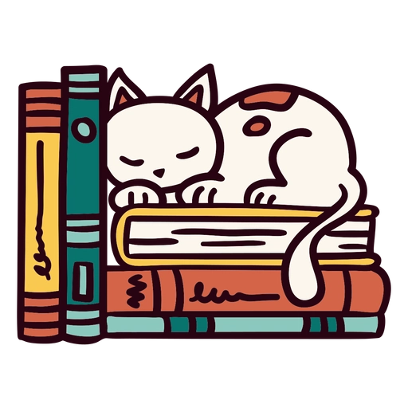
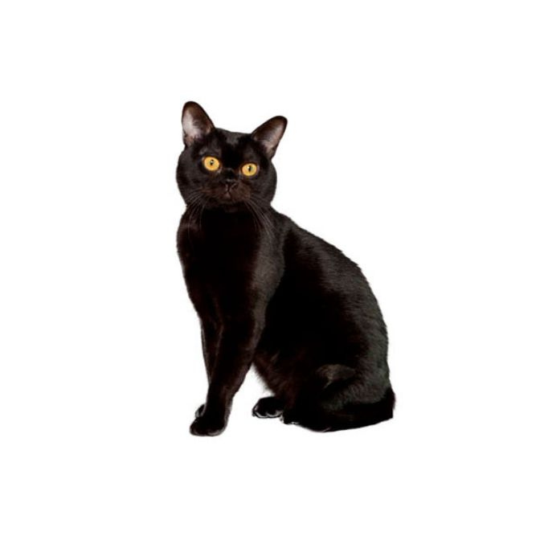

Cationary
Cationary
Do you tend to feel like you are staffed by your cat? Cationary is here to help you understand your feline boss better.

Siamese cats are vocal, dramatic, affectionate, and incredibly intelligent. They crave companionship and stimulation.

Orange tabbies are friendly, easygoing, and playful. They are independent but love interaction.

Bombay cats are curious, confident, and protective. They form strong bonds and love exploring.